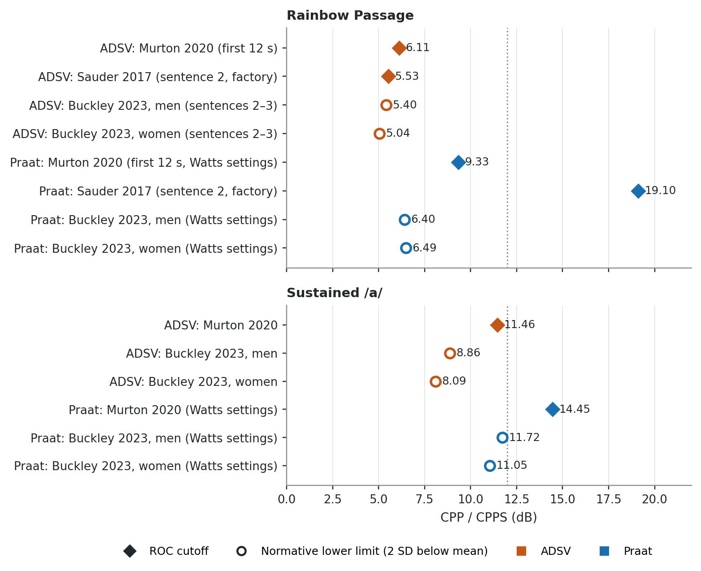

Show the code for this figure
# Values as published. Kind: "cut" = ROC cutoff, "norm" = normative lower limit.
rainbow = [
("ADSV", "Murton 2020 (first 12 s)", 6.11, "cut"),
("ADSV", "Sauder 2017 (sentence 2, factory)", 5.53, "cut"),
("ADSV", "Buckley 2023, men (sentences 2–3)", 5.40, "norm"),
("ADSV", "Buckley 2023, women (sentences 2–3)", 5.04, "norm"),
("Praat", "Murton 2020 (first 12 s, Watts settings)", 9.33, "cut"),
("Praat", "Sauder 2017 (sentence 2, factory)", 19.10, "cut"),
("Praat", "Buckley 2023, men (Watts settings)", 6.40, "norm"),
("Praat", "Buckley 2023, women (Watts settings)", 6.49, "norm"),
]
vowel = [
("ADSV", "Murton 2020", 11.46, "cut"),
("ADSV", "Buckley 2023, men", 8.86, "norm"),
("ADSV", "Buckley 2023, women", 8.09, "norm"),
("Praat", "Murton 2020 (Watts settings)", 14.45, "cut"),
("Praat", "Buckley 2023, men (Watts settings)", 11.72, "norm"),
("Praat", "Buckley 2023, women (Watts settings)", 11.05, "norm"),
]
colors = {"ADSV": vs.ORANGE, "Praat": vs.BLUE}
fig, axes = plt.subplots(2, 1, figsize=(7.2, 5.8), sharex=True,
gridspec_kw={"height_ratios": [len(rainbow), len(vowel)]})
for ax, data, title in zip(axes, [rainbow, vowel], ["Rainbow Passage", "Sustained /a/"]):
y = np.arange(len(data))[::-1]
for yi, (prog, label, val, kind) in zip(y, data):
c = colors[prog]
if kind == "cut":
ax.plot(val, yi, marker="D", ms=7, color=c, zorder=3)
else:
ax.plot(val, yi, marker="o", ms=7, mfc="white", mec=c, mew=1.8, zorder=3)
ax.text(val + 0.35, yi, f"{val:.2f}", va="center", fontsize=8, color=vs.INK)
ax.set_yticks(y)
ax.set_yticklabels([f"{p}: {l}" for p, l, _, _ in data], fontsize=8)
ax.set_ylim(-0.7, len(data) - 0.3)
ax.axvline(12, color=vs.MUTED, lw=1, ls=":", zorder=1)
ax.set_title(title, color=vs.INK)
vs.style_axes(ax)
ax.grid(axis="y", visible=False)
axes[-1].set_xlim(0, 22)
axes[-1].set_xlabel("CPP / CPPS (dB)")
handles = [
plt.Line2D([], [], marker="D", ls="", color=vs.INK, ms=6, label="ROC cutoff"),
plt.Line2D([], [], marker="o", ls="", mfc="white", mec=vs.INK, mew=1.5, ms=6,
label="Normative lower limit (2 SD below mean)"),
plt.Line2D([], [], marker="s", ls="", color=vs.ORANGE, ms=6, label="ADSV"),
plt.Line2D([], [], marker="s", ls="", color=vs.BLUE, ms=6, label="Praat"),
]
fig.legend(handles=handles, loc="lower center", ncol=4, frameon=False, fontsize=8,
bbox_to_anchor=(0.55, 0.0))
fig.tight_layout(rect=(0, 0.05, 1, 1))
plt.show()